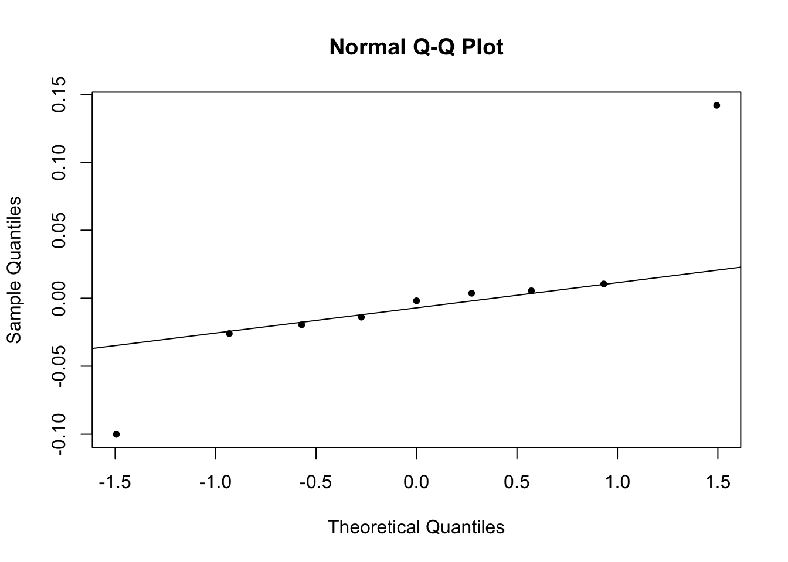

options(knitr.kable.NA = '')
library(ggplot2)
library(gridExtra)
library(dplyr)
library(readxl)
library(lmerTest)
library(kableExtra)
library(gtsummary)
options(contrasts=c("contr.sum","contr.sum"))
df <- read_excel("data1.xlsx")Introduction
Dans un modèle linéaire classique (noté LM), on suppose que les données (observations) sont indépendantes.
Dans le modèle à effets aléatoires (noté LMER), les données considérées seront dépendantes :
Mesures répétées sur les mêmes individus (e.g., taux de cholesterol mesuré sur des rats suivant successivement plusieurs régimes \(\leadsto\) données expérimentales).
Mesures longitudinales (e.g. suivi journalier de la tension artérielle chez une groupe d’individus \(\leadsto\) données observationnelles).
Mesures hiérarchiques (e.g., glycémie mesurée sur des vaches de la même espèce, plusieurs espèces étant comparées). (Schabenberger and Pierce 2001) On parle aussi de données multiniveaux.
Données spatiales (e.g., données sur des vaches de même champs, plusieurs champs étant considérées).
Notations
Dans toute la suite la variable que l’on souhaite expliquer est notée \(Y\), le traitement sera noté \(A\) et les covariables au traitement seront notées \(X\) (dans l’écriture on se limitera à une seule covariable mais plusieurs peuvent être considérées).
Dans ce cours : \(Y\) est une variable continue, nous verrons dans un autre cours le cas où la variable est qualitative.
Modélisation statistique de données indépendantes
On veut étudier l’effet du traitement \(A\) sur \(Y\) en contrôlant la covariable \(X\). On a deux situations possibles :
- \(A\) est une variable continue (e.g. dose de médicament) et dans ce cas on écrit :
\[ Y_{i}=\mu+\alpha A_i+\beta X_{i}+\varepsilon_{i} \] Pour l’animal \(i\), \(Y_{i}\) est la valeur observée de la variable d’intérêt \(Y\) , \(A_i\) la dose de médicament administrée, \(X_{i}\) la valeur de la covariable \(X\) .
Et alors on teste l’effet de \(A\) en testant \(H_0:\alpha=0.\)
- \(A\) est une variable qualitative (e.g. un régime) qui possède différents niveaux (on note \(J\) le nombre de niveaux de \(A\)). Dans ce cas on écrit :
\[ Y_{ij}=\mu+\alpha_j +\beta X_{ij}+\varepsilon_{ij} \]
Pour l’animal \(i\) et le niveau de traitement \(j\), \(Y_{ij}\) désigne la valeur de la variable d’intérêt, \(X_{ij}\) étant la valeur de la covariable \(X\).
Pour tester l’effet du traitement \(A\) on va tester \(H_0:\alpha_1=...=\alpha_J=0.\)
Remarque : Dans les deux cas \(\mu\) représente l’intercept du modèle.
Dans cette modélisation les résidus sont supposés indépendants (c’est à dire au moins non corrélés). Ceci est plausible car il n’y a, a priori, aucun rapport entre les différents individus.
Modélisation 1 on aggrège les données sur Time
On calcule les moyennes de toutes les variables considérées sur les rats (c’est à dire pour chaque rat on calcule la moyenne entre la semaine 1 et la semaine 11).
Question : Les données sont elles dépendantes ou indépendantes ? Pourquoi ?
Du côté de R : on utilise la librarie dplyr très pratique pour manipuler les données. Le site https://juba.github.io/tidyverse/10-dplyr.html constitue une très bonne introduction à ce package.
On va étudier par exemple les variables NEFA et TG
df1 = df %>%
group_by(Rats,Groups) %>%
summarise(NEFA=mean(NEFA),TG=mean(TG))Etude de l’effet régime
On commence par faire une représentation graphique de NEFA en fonction du groupe
ggplot(df1,aes(x=Groups,y=NEFA))+
geom_boxplot()+
theme_minimal()+
labs(title = "NEFA en fonction du régime")Question Le regime semble t’il avoir un effet sur NEFA ? Quel groupe a la plus grande dispersion ? A combien d’observations correspondent les boxplots
df1$Groups<-as.factor(df1$Groups)
relevel(df1$Groups,ref="CC") [1] CC CC CC CC CC CC LL LL LL LL LL LL FF FF FF FF FF FF LF LF LF LF LF LF
Levels: CC FF LF LLmodLin<-lm(NEFA~Groups,data=df1)
anova(modLin) %>% kable(digits=3)| Df | Sum Sq | Mean Sq | F value | Pr(>F) | |
|---|---|---|---|---|---|
| Groups | 3 | 0.018 | 0.006 | 0.898 | 0.459 |
| Residuals | 20 | 0.134 | 0.007 |
summary(modLin)
Call:
lm(formula = NEFA ~ Groups, data = df1)
Residuals:
Min 1Q Median 3Q Max
-0.12514 -0.04834 -0.00613 0.05089 0.16461
Coefficients:
Estimate Std. Error t value Pr(>|t|)
(Intercept) 0.405113 0.016709 24.245 2.66e-16 ***
Groups1 -0.025634 0.028941 -0.886 0.386
Groups2 0.007566 0.028941 0.261 0.796
Groups3 0.041680 0.028941 1.440 0.165
---
Signif. codes: 0 '***' 0.001 '**' 0.01 '*' 0.05 '.' 0.1 ' ' 1
Residual standard error: 0.08186 on 20 degrees of freedom
Multiple R-squared: 0.1187, Adjusted R-squared: -0.01346
F-statistic: 0.8981 on 3 and 20 DF, p-value: 0.4594Modélisation à effets mixtes
Ici on va prendre la dimension temporelle des données. C’est à dire l’on modélise le fait que pour chaque rat il y a eu deux mesures de chaque propriété biochimique.
Remarque
Avec deux mesures par individu, la modélisation tenant compte de la mesure répétée est limitée à un effet aléatoire sur l’intercept du modèle.
Un modèle dans lequel on considère des effets fixes et des effets aléatoires s’appelle un modèle à effet mixte.
Lorsqu’il y a plus de 2 répétitions on peut envisager des modèles à pentes aléatoires, on le verra dans un deuxième exemple.
Modèle à intercept aléatoire
ggplot(df,aes(x=Groups,y=NEFA,color=Time))+
geom_boxplot()+
theme_minimal()+
labs(title = "NEFA en fonction du régime")Dans R pour définir un modèle à effets mixtes on va utiliser le package lmerTest.
La figure ci-dessus nous donne la différence de NEFA pour chaque rat du groupe CC (contrôle) en fonction de la semaine considérée.
D’un point de vue modélisation on va écrire :
\[ NEFA_{ij}=\mu+\alpha_i+\beta_{j}+\varepsilon_{ij}, \] où \(i\) est le numéro du rat (de 1 à 6) et \(j\) la semaine considérée (1 ou 11).
On obtient les résultats suivants (estimations avec la fonction lm de R).
dfCC<-as.data.frame(df%>% filter(Groups=="CC"))
dfCC$Rats<-factor(dfCC$Rats)
dfCC$Time<-factor(dfCC$Time,levels=c("Week 11","Week 1"))
relevel(dfCC$Time,ref="Week 1") [1] Week 1 Week 1 Week 1 Week 1 Week 1 Week 1 Week 11 Week 11 Week 11
[10] Week 11 Week 11 Week 11
Levels: Week 1 Week 11mod<-lm(NEFA~Time+Rats,data=dfCC)
summary(mod)
Call:
lm(formula = NEFA ~ Time + Rats, data = dfCC)
Residuals:
1 2 3 4 5 6 7 8
0.11125 0.01505 -0.10442 0.12214 -0.09833 -0.04568 -0.11125 -0.01505
9 10 11 12
0.10442 -0.12214 0.09833 0.04568
Coefficients:
Estimate Std. Error t value Pr(>|t|)
(Intercept) 0.37948 0.04090 9.279 0.000245 ***
Time1 -0.07570 0.04090 -1.851 0.123413
Rats1 -0.02154 0.09145 -0.235 0.823165
Rats2 0.03709 0.09145 0.406 0.701859
Rats3 -0.06620 0.09145 -0.724 0.501559
Rats4 0.07309 0.09145 0.799 0.460437
Rats5 -0.12514 0.09145 -1.368 0.229483
---
Signif. codes: 0 '***' 0.001 '**' 0.01 '*' 0.05 '.' 0.1 ' ' 1
Residual standard error: 0.1417 on 5 degrees of freedom
Multiple R-squared: 0.5898, Adjusted R-squared: 0.09756
F-statistic: 1.198 on 6 and 5 DF, p-value: 0.4307plot(as.numeric(dfCC$Time),dfCC$NEFA,pch=20,col=dfCC$Rats,ylim=c(0,.6),
main="Groupe CC",ylab="NEFA")
abline(a=coef(mod)[1],b=coef(mod)[2])
for(i in 1:5){
abline(a=coef(mod)[1]+coef(mod)[2+i],b=coef(mod)[2],col=(1+i))
}
En soi, les résultats individuels des rats n’ont aucun intérêt, on veut seulement “neutraliser” les différences de NEFA qui sont associées à ces rats. Pour ce faire plutôt que de considérer un effet fixe par rat on va utiliser un effet aléatoire qui résumera l’effet “rat”.
Le modèle précédent est toujours le même sauf que
\[ \alpha_i \sim \mathcal N(0,\sigma^2_\alpha) \] avec \(\alpha_i,\varepsilon_{ij}\) indépendantes. On résume ainsi les différents coefficients \(\alpha_i\) à une seule variance.
modE<-lmer(NEFA~Time+(1|Rats),data=dfCC)
summary(modE)Linear mixed model fit by REML. t-tests use Satterthwaite's method [
lmerModLmerTest]
Formula: NEFA ~ Time + (1 | Rats)
Data: dfCC
REML criterion at convergence: -7.1
Scaled residuals:
Min 1Q Median 3Q Max
-1.6849 -0.5277 0.2272 0.4915 1.4720
Random effects:
Groups Name Variance Std.Dev.
Rats (Intercept) 0.00000 0.0000
Residual 0.01759 0.1326
Number of obs: 12, groups: Rats, 6
Fixed effects:
Estimate Std. Error df t value Pr(>|t|)
(Intercept) 0.37948 0.03829 10.00000 9.912 1.72e-06 ***
Time1 -0.07570 0.03829 10.00000 -1.977 0.0762 .
---
Signif. codes: 0 '***' 0.001 '**' 0.01 '*' 0.05 '.' 0.1 ' ' 1
Correlation of Fixed Effects:
(Intr)
Time1 0.000
optimizer (nloptwrap) convergence code: 0 (OK)
boundary (singular) fit: see help('isSingular')On constate que cela ne change pas l’estimation de l’effet semaine (appelé effet fixe).
Retour au modèle global
\[ NEFA_{ijk}=\mu+\alpha_i+\beta_{j}+\gamma_{k}+(\beta\gamma)_{jk}+\varepsilon_{ijk}, \] où \(i\) est le numéro du rat, \(j\) le numéro de la semaine et \(k\) le numéro du groupe. On a donc trois effets fixes : semaine, groupe et leur interaction. Un effet aléatoire sur l’effet individuel rat.
RegLin<-lm(NEFA~Groups*Time,data=df)
summary(RegLin)
Call:
lm(formula = NEFA ~ Groups * Time, data = df)
Residuals:
Min 1Q Median 3Q Max
-0.223468 -0.052560 -0.003011 0.056438 0.217414
Coefficients:
Estimate Std. Error t value Pr(>|t|)
(Intercept) 0.405113 0.016595 24.411 < 2e-16 ***
Groups1 -0.025634 0.028744 -0.892 0.37783
Groups2 0.007566 0.028744 0.263 0.79373
Groups3 0.041680 0.028744 1.450 0.15484
Time1 0.054609 0.016595 3.291 0.00209 **
Groups1:Time1 0.021088 0.028744 0.734 0.46744
Groups2:Time1 -0.047540 0.028744 -1.654 0.10598
Groups3:Time1 0.008394 0.028744 0.292 0.77179
---
Signif. codes: 0 '***' 0.001 '**' 0.01 '*' 0.05 '.' 0.1 ' ' 1
Residual standard error: 0.115 on 40 degrees of freedom
Multiple R-squared: 0.2905, Adjusted R-squared: 0.1663
F-statistic: 2.339 on 7 and 40 DF, p-value: 0.04231anova(RegLin)Analysis of Variance Table
Response: NEFA
Df Sum Sq Mean Sq F value Pr(>F)
Groups 3 0.03611 0.012037 0.9105 0.444523
Time 1 0.14314 0.143141 10.8280 0.002093 **
Groups:Time 3 0.03722 0.012405 0.9384 0.431127
Residuals 40 0.52878 0.013220
---
Signif. codes: 0 '***' 0.001 '**' 0.01 '*' 0.05 '.' 0.1 ' ' 1RegLinME<-lmer(NEFA~Groups*Time+(1|Rats),data=df)
summary(RegLinME)Linear mixed model fit by REML. t-tests use Satterthwaite's method [
lmerModLmerTest]
Formula: NEFA ~ Groups * Time + (1 | Rats)
Data: df
REML criterion at convergence: -34.1
Scaled residuals:
Min 1Q Median 3Q Max
-1.92736 -0.46372 -0.03845 0.47918 1.87916
Random effects:
Groups Name Variance Std.Dev.
Rats (Intercept) 0.000182 0.01349
Residual 0.013038 0.11418
Number of obs: 48, groups: Rats, 24
Fixed effects:
Estimate Std. Error df t value Pr(>|t|)
(Intercept) 0.405113 0.016709 19.999949 24.245 2.66e-16 ***
Groups1 -0.025634 0.028941 19.999949 -0.886 0.38629
Groups2 0.007566 0.028941 19.999949 0.261 0.79644
Groups3 0.041680 0.028941 19.999949 1.440 0.16529
Time1 0.054609 0.016481 19.999942 3.313 0.00347 **
Groups1:Time1 0.021088 0.028545 19.999942 0.739 0.46864
Groups2:Time1 -0.047540 0.028545 19.999942 -1.665 0.11142
Groups3:Time1 0.008394 0.028545 19.999942 0.294 0.77175
---
Signif. codes: 0 '***' 0.001 '**' 0.01 '*' 0.05 '.' 0.1 ' ' 1
Correlation of Fixed Effects:
(Intr) Grops1 Grops2 Grops3 Time1 Gr1:T1 Gr2:T1
Groups1 0.000
Groups2 0.000 -0.333
Groups3 0.000 -0.333 -0.333
Time1 0.000 0.000 0.000 0.000
Groups1:Tm1 0.000 0.000 0.000 0.000 0.000
Groups2:Tm1 0.000 0.000 0.000 0.000 0.000 -0.333
Groups3:Tm1 0.000 0.000 0.000 0.000 0.000 -0.333 -0.333anova(RegLinME)Type III Analysis of Variance Table with Satterthwaite's method
Sum Sq Mean Sq NumDF DenDF F value Pr(>F)
Groups 0.035129 0.011710 3 20 0.8981 0.459421
Time 0.143141 0.143141 1 20 10.9792 0.003467 **
Groups:Time 0.037216 0.012405 3 20 0.9515 0.434661
---
Signif. codes: 0 '***' 0.001 '**' 0.01 '*' 0.05 '.' 0.1 ' ' 1La différence entre les deux modèles est très faible ce qui s’explique par le fait qu’il n’y a que deux mesures différentes par rat.
On peut ajouter des covariables dans le modèle (les autres paramètres biochimiques)
LinModE<-lmer(NEFA~Time*Groups+
BW+Cholesterol+Insulinemia+TG+(1|Rats),data=df)
anova(LinModE)Type III Analysis of Variance Table with Satterthwaite's method
Sum Sq Mean Sq NumDF DenDF F value Pr(>F)
Time 0.003758 0.003758 1 30.909 0.3027 0.58616
Groups 0.012932 0.004311 3 21.948 0.3472 0.79152
BW 0.002444 0.002444 1 21.046 0.1968 0.66184
Cholesterol 0.063661 0.063661 1 30.773 5.1269 0.03075 *
Insulinemia 0.000024 0.000024 1 34.629 0.0019 0.96530
TG 0.002964 0.002964 1 34.009 0.2387 0.62826
Time:Groups 0.030426 0.010142 3 20.713 0.8168 0.49920
---
Signif. codes: 0 '***' 0.001 '**' 0.01 '*' 0.05 '.' 0.1 ' ' 1Si on veut un modèle plus parcimonieux (on ne garde que les variables significatives), alors on utilise la fonction step :
step(LinModE)Backward reduced random-effect table:
Eliminated npar logLik AIC LRT Df Pr(>Chisq)
<none> 14 6.8252 14.350
(1 | Rats) 1 13 6.8219 12.356 0.0065287 1 0.9356
Backward reduced fixed-effect table:
Eliminated Df Sum of Sq RSS AIC F value Pr(>F)
Insulinemia 1 1 0.000017 0.45533 -201.58 0.0013 0.97110
BW 2 1 0.002678 0.45801 -203.30 0.2176 0.64361
TG 3 1 0.002849 0.46086 -205.00 0.2364 0.62963
Time:Groups 4 3 0.039239 0.50010 -207.08 1.1069 0.35795
Groups 5 3 0.023605 0.52370 -210.87 0.6608 0.58079
Time 0 1 0.048804 0.57251 -208.59 4.1935 0.04644 *
Cholesterol 0 1 0.078402 0.60211 -206.17 6.7368 0.01271 *
---
Signif. codes: 0 '***' 0.001 '**' 0.01 '*' 0.05 '.' 0.1 ' ' 1
Model found:
NEFA ~ Time + CholesterolVérification de la qualité (mathématique) du modèle.
Normalité et indépendance des résidus du modèle
On a supposé que les résidus \(\varepsilon_{ijk}\) sont distribués normalement on peut le vérifier graphiquement
qqnorm(residuals(LinModE),pch=20)
qqline(residuals(LinModE),pch=20)
ou bien grâce au test de Shapiro-Wilk
shapiro.test(residuals(modLin))
Shapiro-Wilk normality test
data: residuals(modLin)
W = 0.97806, p-value = 0.8576On peut donc considérer que les résidus sont normaux.
Pour vérifier l’indépendance on regarde si il existe un lien entre les valeurs prédites et les résidus :
plot(residuals(LinModE),fitted(LinModE),pch=20)Clairement il n’y pas de lien !
Normalité des effets aléatoires
qqnorm(ranef(LinModE)$Rats$`(Intercept)`)
qqline(ranef(LinModE)$Rats$`(Intercept)`)shapiro.test(ranef(LinModE)$Rats$`(Intercept)`)
Shapiro-Wilk normality test
data: ranef(LinModE)$Rats$`(Intercept)`
W = 0.98058, p-value = 0.9064Modèle à pentes aléatoires
Les données sont issues d’une thèse vétérinaire soutenue en Juillet 2021. Le titre :
df <- read_excel("ProAKAP4_BOUC.xlsx")
df$Milieu<-factor(df$Milieu,levels=c("L","B","O")) # Milieu est une variable qualitative
df$Race<-as.factor(df$Race)L’une des problématiques est de tester l’effet d’un dilueur (3 milieux considérés) et de la race (deux races) sur la variable ALH (Amplitude de déplacement latéral de la tête du spermatozoide).
Pour chacune des deux races on a 3 boucs différents et chacun des échantillons obtenu est placé dans un milieu différent.
ggplot(df,aes(x=Milieu,y=ALH,color=Race))+
geom_boxplot()+
theme_minimal()Le modèle mathématique qui est testé est :
\[ ALH_{ijk}=\alpha_i+\beta_i Dilueur_{ij}+ \gamma_i Race_{ik}+\varepsilon_{ijk} \] où \(i\) est le bouc, \(j\) le dilueur et \(k\) la race.
avec \[ \begin{cases} \alpha_i=\alpha+a_i, \quad a_i\sim \mathcal N(0,\sigma^2_a) \\ \beta_i = \beta +b_i, \quad \quad b_i\sim \mathcal N(0,\sigma^2_b) \\ \gamma_i = \gamma +c_i, \quad \quad c_i\sim \mathcal N(0,\sigma^2_c) \end{cases} \] Les termes \(\alpha,\beta,\gamma\) sont les effets fixes du modèle et les termes \(a_i,b_i,c_i\) sont les effets aléatoires.
LinModE<-lmer(ALH~Milieu+Race+(Milieu+Race|Bouc),data=df)Le modèle est singulier c’est à dire que certaines variances des effets aléatoires sont proches de 0 :
ranef(LinModE)$Bouc (Intercept) Milieu1 Milieu2 Race1
1 0.047369003 -0.048770430 0.039158345 -0.151805379
2 -0.216800733 0.042840555 -0.030608248 -0.054310081
3 0.048217086 0.117909453 -0.098190480 0.541329817
4 0.068416764 -0.073347145 0.058952324 -0.231327479
5 0.002829674 -0.001878355 0.001486411 -0.004771554
6 -0.028235175 0.020054706 -0.015912771 0.053040236
7 -0.168002511 0.132860617 -0.105832737 0.371827278
8 0.275483309 -0.213804512 0.170199303 -0.592861393
9 -0.029277416 0.024135111 -0.019252147 0.068878555apply(ranef(LinModE)$Bouc,2,var)(Intercept) Milieu1 Milieu2 Race1
0.020253802 0.010981106 0.007047679 0.108733160 Il s’agit de l’effet aléatoire sur la variable Milieu qui a une variance proche de 0 donc on va retirer ce terme du modèle
LinModE<-lmer(ALH~Milieu+Race+(Race|Bouc),data=df)On peut alors analyser les sorties du modèle :
anova(LinModE)Type III Analysis of Variance Table with Satterthwaite's method
Sum Sq Mean Sq NumDF DenDF F value Pr(>F)
Milieu 2.9381 1.469 2 70.000 5.0027 0.009316 **
Race 1.0860 1.086 1 6.988 3.6985 0.095955 .
---
Signif. codes: 0 '***' 0.001 '**' 0.01 '*' 0.05 '.' 0.1 ' ' 1On peut vérifier les hypothèses d’utilisation du modèle :
Normalité des résidus et indépedance.
qqnorm(residuals(LinModE),pch=20)
qqline(residuals(LinModE),pch=20)shapiro.test(residuals(LinModE))
Shapiro-Wilk normality test
data: residuals(LinModE)
W = 0.98544, p-value = 0.4918plot(residuals(LinModE),fitted(LinModE),pch=20)
Pour les effets aléatoires :
qqnorm(ranef(LinModE)$Bouc$`(Intercept)`,pch=20)
qqline(ranef(LinModE)$Bouc$`(Intercept)`,pch=20)
shapiro.test(ranef(LinModE)$Bouc$`(Intercept)`)
Shapiro-Wilk normality test
data: ranef(LinModE)$Bouc$`(Intercept)`
W = 0.82029, p-value = 0.03472qqnorm(ranef(LinModE)$Bouc$Race1,pch=20)
qqline(ranef(LinModE)$Bouc$Race1,pch=20)shapiro.test(ranef(LinModE)$Bouc$Race1)
Shapiro-Wilk normality test
data: ranef(LinModE)$Bouc$Race1
W = 0.97119, p-value = 0.9047Le modèle est donc validé de ce point de vue.
Autres modélisations
Considérons deux variables continues ProAKAP4 et PROGRESSIVE_PCT